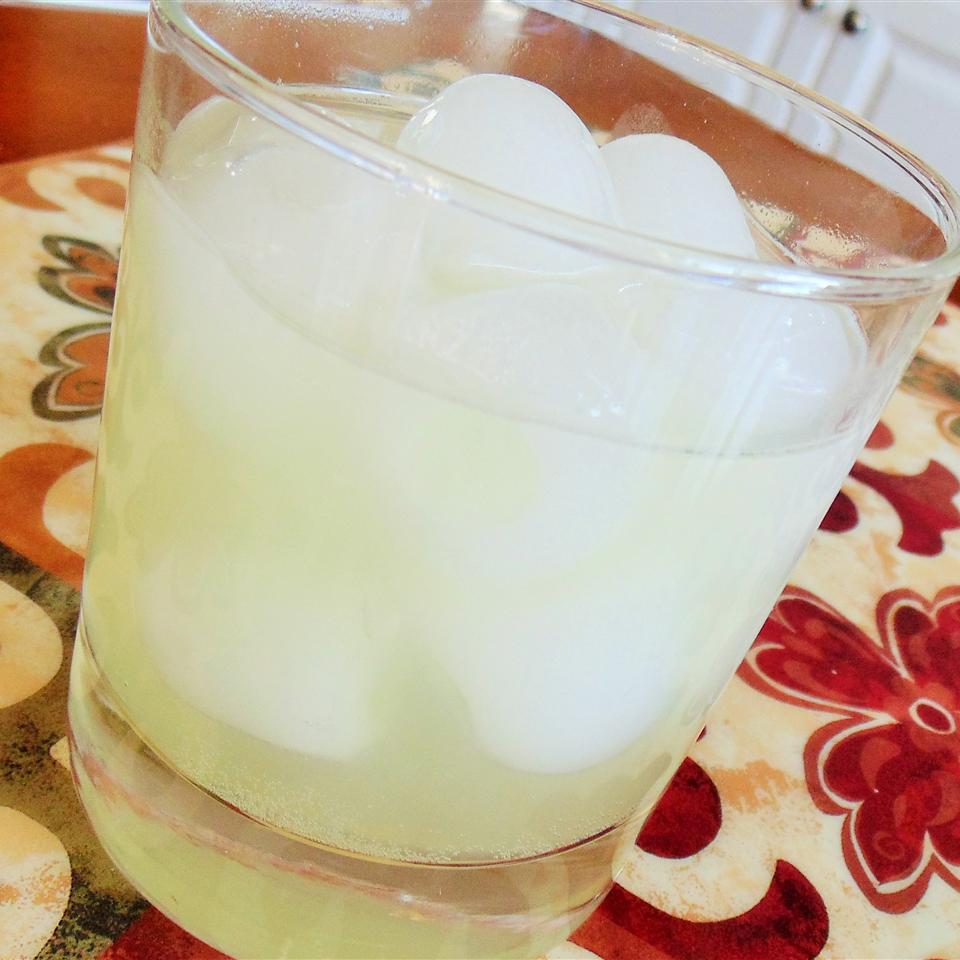

The Juicy Frog Drink

Description
The juicy frog is a delicious, not-too-sweet,
not-too-tart drink, ready for any party! Approved
by rowdy French-Canadian women! Add more 7up® to taste!
Ingredients
- 3 cubes ice
- ½ (1.5 fluid ounce) jigger vodka
- ½ (1.5 fluid ounce) jigger triple sec
- ½ (1.5 fluid ounce) jigger lime cordial
- 1 (1.5 fluid ounce) jigger sweet and sour mix
- ½ cup lemon-lime soda (such as 7-Up®)
Steps
-
Place ice cubes in a glass and top with vodka,
triple sec, lime cordial, sweet and sour mix,
and lemon-lime soda, respectively. Mix well.